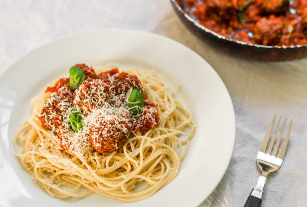

Ingrediënten voor 4 personen

300 gram spaghetti
500 gram rundergehakt
1 ui
150 gram wortel
1 rundvleesbouillonblokje
600 ml tomatenblokjes
1 blikje tomatenpuree
oregano
peper en zout
*parmezaanse kaas
| Stap 1 | Doe de ui (gesnipperd) en de wortel (in blokjes) in de koekenpan en bak dit ongeveer 5 minuten. |
| Stap 2 | Voeg hierna het gehakt eraan toe en bak dit rul. |
| Stap 3 | Daarna moet de tomatenpuree erbij en deze bak je 2 minuten mee. |
| Stap 4 | Doe het bouillonblokje, die je eerst oplost in kokend water, en de tomatenblokjes in de koekenpan. |
| Stap 5 | Breng dit geheel op smaak met de oregano, peper en zout. |
| Stap 6 | Laat dit geheel 20 tot 25 minuten pruttelen. |
| Stap 7 | Ondertussen kook je de spaghetti gaar. |
| Stap 8 | Je kunt het serveren met de parmezaanse kaas. |